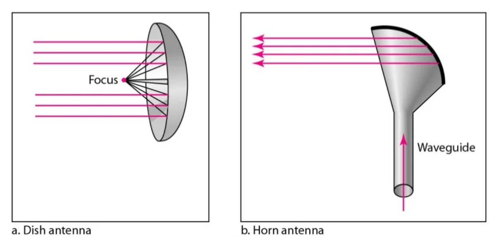

Microwaves are electromagnetic waves with frequency between 1 and 300 GHz. Microwaves have only one direction of propagation. Microwaves can be sharply concentrated when transmitted by an antenna. This necessitates the alignment of the transmitting and receiving antennas. The unidirectional characteristic offers a clear benefit. An antenna pair can be aligned without interfering with another aligned antenna pair.
The following describes some characteristics of microwaves propagation:
Microwaves need unidirectional antennas that send out signals in one direction. Two types of antennas are used for microwave communications: Parabolic Dish and Horn.
A parabolic antenna works as a funnel, catching a wide range of waves and directing them to a common point. In this way, more of the signal is recovered than would be possible with a single-point receiver.
A horn antenna looks like a gigantic scoop. Outgoing transmissions are broadcast up a stem and deflected outward in a series of narrow parallel beams by the curved head. Received transmissions are collected by the scooped shape of the horn, in a manner similar to the parabolic dish, and are deflected down into the stem.
Applications of Micro Waves